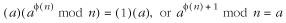

15.5 Description of RSA
RSA
(Rivest-Shamir-Adleman) is one of the most popular asymmetric,
or public-key, ciphers. RSA is
asymmetric because the key used to encipher data is not the
same key used to decipher it. Like DES, RSA is a block cipher,
but the block size varies depending on the size of the keys.
If the amount of data to be encrypted is not an even multiple
of this size, it is padded in some application-specific
way.
One important implication of RSA being an
asymmetric cipher is that when transmitting data across a
network, the key used to encipher the data does not have to be
transmitted with the data itself. Thus, there is less chance
of having the key compromised. RSA is also useful when parties
enciphering data are not allowed to decipher the data of
others. Parties who wish to encipher data use one key, which
is considered public, while parties allowed to decipher the
data use a second key, which they keep private.
RSA is considered very secure, but it runs
considerably slower than DES. As with DES, the security of RSA
has never been proven, but it is related to the difficult
problem of factoring large numbers (numbers containing at
least 200 decimal digits). Since no efficient solutions are
known for this problem, it is conjectured that there are no
efficient ways to crack RSA.
RSA is based on principles that are less
obtuse than the numerous permutations and substitutions
performed in DES. Fundamentally, enciphering and deciphering
data revolves around modular
exponentiation, an operation
in modular arithmetic. Modular
arithmetic is integer arithmetic as usual except that when we
work modulo n, every result
x is replaced with a member of
{0, 1, . . . , n - 1} so that
x mod n is the remainder of x /n.
For example, 40 mod 11 = 7 because 40/11 = 3 with a remainder
of 7. Modular exponentiation is the process of computing ab mod n.
15.5.1 Computing Public and Private
Keys
In RSA, the public key and private key work
together as a pair. The public key is used to encipher a block
of data, after which only the corresponding private key can be
used to decipher it. When generating keys, we follow a few
steps to ensure that this marriage works. These steps also
ensure that there is no practical way to determine one key
from the other.
To begin, we select two large prime numbers,
which are called p and q (see the related topics at the end
of the chapter). Considering today's factoring technology,
these each should be at least 200 decimal digits to be
considered secure in practice. We then compute n, the product of these numbers:
n = pq
Next, we choose a small odd integer e, which will become part of the
public key. The most important consideration in choosing e is that it should have no factors
in common with (p - 1)(q - 1). In other words, e is relatively prime with (p - 1) (q - 1). For example, if p = 11 and q = 19, then n = (11)(19) = 209. Here we might
choose e = 17 because (p - 1)(q - 1) = (10)(18) = 180, and 17 and
180 have no common factors. Common choices for e are 3, 17, and 65,537. Using one of
these values does not jeopardize the security of RSA because
deciphering data is a function of the private key.
Once we have chosen a value for e, we compute a corresponding value
d, which will become part of
the private key. To do this, we compute the multiplicative
inverse of e, modulo (p - 1)(q - 1), as follows:
d =
e-1 mod (p-1)(q-1)
The way to think of this is: what value of
d satisfies ed mod (p - 1)(q - 1) = 1? For example, in the
equation 17d mod 180 = 1, one
possible value for d is 53.
Other possibilities are 233, 413, 593, and so forth. An
extension of Euclid's algorithm is used to compute
multiplicative modular inverses in practice (see the related
topics at the end of the chapter). In this book, code is
provided for using d and e but not for deriving them.
Now that we have values for both e and d, we publish (e, n)
as the public key P and keep
(d, n) secret as the private key S, as shown:
p = (e, n)
S = (d,n)
Parties who encipher data use P. Those who decipher data use S. To ensure that even someone who
knows P cannot compute S, the values used for p and q must never be revealed.
The security offered by P and S together comes from the fact that
multiplication is a good one-way
function. One-way functions are fundamental to
cryptography. Simply stated, a one-way function is a function
that is relatively easy to compute in one direction but
impractical to reverse. For example, in RSA, multiplying p and q is a one-way function because
although multiplying p and
q is easy, factoring n back into p and q is extremely time-consuming,
provided the values chosen for p and q are large enough.
The steps performed to compute P and S have their origin in some
interesting properties of Euler's
function (pronounced
"oiler"). In particular, these properties allow us to do
useful things with modular exponentiation. Euler's function,
denoted f (n), defines how many numbers less
than n are relatively prime with n. Two numbers are said to be
relatively prime if their only common factor is 1. As an
example of Euler's function, f (8) = 4 because there are four
numbers less than 8 that are relatively prime with 8, namely
1, 3, 5, and 7.
Euler's function has two properties that are
particularly relevant to RSA. First, when n is prime, f (n) = n
- 1. This is because the only factors of n are 1 and n; thus, n is relatively prime with all of the
n - 1 numbers before it.
Another interesting property is that f (n) is the exponential period modulo n for numbers relatively prime with
n. This means that for any
number a < n relatively prime with n, a
f (n) mod n = 1. For example, 14 mod
8 = 1, 34 mod 8 = 1, 54 mod 8 = 1, and
74 mod 8 = 1. Multiplying both sides of this
equation by a yields:

Hence, 15 mod 8 = 1, 35
mod 8 = 3, 55 mod 8 = 5, and 75 mod 8 =
7. This algebraic adjustment is powerful because for some
equation c = me mod n, it lets us find a value d so that c
d mod n = m. This is the identity that allows
us to encipher data in RSA and then decipher the data back as
shown below:
The relationship of Euler's function with
exponential periods guarantees that any block of data we
encipher will decipher again uniquely. To find d, we solve the equation d = e
- 1f (n)
+ 1. Unfortunately, there is not always an integer solution to
d = e - 1f (n) + 1. For example, consider if
e = 5 and n = 13. In this case, d = (1/5)((13 - 1) + 1) = (1/5)(13).
To deal with this, we compute d
modulo f (n). In other words, d = (e - 1f (n) + 1) mod f (n), which can be simplified to:

We can make this simplification because
(f
(n) + 1) mod f (n) = (f (n)
+ 1) - f (n)
= 1. We can verify this by inserting any number in place of
f
(n). Notice the similarity
between this equation and the one used for d earlier in the steps for computing
keys. This provides a way to compute d from e and n. Of course, since e and n are public and potentially known to
an adversary, one might ask: doesn't this give an adversary
the same opportunity to compute the private key? At this point
it is worth examining where RSA's security comes from.
RSA gets its security from the critical fact
that Euler's function is multiplicative. This means that if
p and q are relatively prime (which they
are if we choose them both to be prime), then f (pq) = f (p)f (q). Thus, if we have two primes p and q, and n = pq, then f (n) = (p - 1)(q - 1), and most importantly:
d =
e-1 mod (p-1)(q-1)
Therefore, even though an adversary might
know both e and n, in order to compute d, she would have to know f (n), which can only be determined in a
practical manner by knowing both p and q. Since these are not known, the
adversary is left to factor n,
an extremely time-consuming process, provided the values
chosen for p and q are large enough.
15.5.2 Enciphering and Deciphering
Data Blocks
To encipher and decipher data with RSA, we
first need to choose a block size. To do this, we must ensure
that the largest value that the block can store, considering
its total number of bits, is less than n. For example, if p and q are primes containing 200 decimal
digits, n will be just under
400 decimal digits. Therefore, we should choose a block size
small enough to store only those numbers with less than this
many decimal digits. In practice, we often choose the block
size in bits to be the largest power of 2 less than n. For example, if n were 209, we would choose a block
size of 7 bits because 27 = 128 is less than 209,
but 28 = 256 is greater.
To encipher a block of plaintext Mi, the i th block of data from a buffer
M, we use the public key (e, n)
to take the numerical value of Mi, raise it to the power of e, and take the result modulo n. This yields a block of ciphertext
Ci. The modulo n operation ensures that Ci will fit into the same size block
as the plaintext. Thus, to encipher a block of plaintext:
It was mentioned earlier that Euler's
function is the basis for using modular exponentiation to
encipher data using this equation and, in the equation that
follows, for being able to get the original plaintext back. To
decipher a block of ciphertext Ci, the i th block of ciphertext from a
buffer C, we use the private
key (d, n) to take the numeric value of Ci , raise it to the power of d, and take the result modulo n. This yields the original block of
plaintext Mi. Thus, to decipher
a block of ciphertext:
|